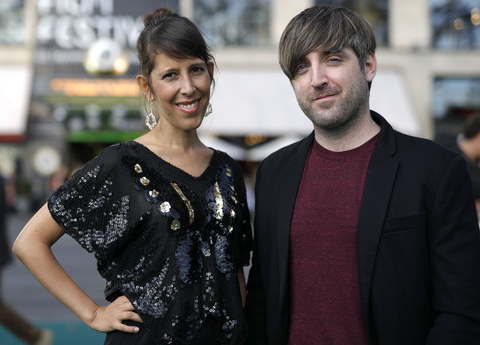

WHEN TWO WORLDS COLLIDE
Directed by Heidi Brandenburg and Mathew Orzel | Peru-USA-UK | 2016 | 103 mins
EVENT INFORMATION
PITTSBURGH PREMIERE!
Friday, March 31, 2017
7:00 pm | CMOA Theater, Carnegie Museum of Art
BUY TICKETS!
EVENT INCLUDES:
- Panel discussion with University of Pittsburgh’s Dr. Angelina Cotler, the Associate Director of the Center for Latin American Studies (CLAS) and José Incio, a Ph.D. student
- Food Reception
CO-PRESENTED BY: Carnegie Nexus
CO-SPONSORED BY: CMU’s Steinbrenner Institute for Environmental Education and Research
PROMOTIONAL PARTNER: Sustainability Pioneers
ABOUT THE FILM
“A potent chronicle of the fight between indigenous tribes and government-supported business interests in the Peruvian Amazon.”
- Dennis Harvey
A local Peruvian political-environmental conflict explodes on screen into a far more global concern in the documentary When Two Worlds Collide. The film follows the natives of North Peru as they protest against the regime led by President Alan Garcia, as he pushes pro-mining initiatives to harvest the natural resources of the Bagua Region. Audiences catch a glimpse of what happens when policy pits indigenous people against the state government. When Two Worlds Collide offers a strong perspective into the disconnect between a government and its people, and the consequences faced in the struggle for a healthy environment.
AWARDS
- DMZ International Film Festival, 2016, International Competition Special Jury Prize
- Dokufest International Documentary and Short Film Festival, 2016, Green Dox Award
- Madrid International Documentary Film Festival, 2016, Grand Jury Prize
- Minneapolis St. Paul International Film Festival, 2016, Best Documentary Special Mention
- Mumbai Film Festival, 2016, Special Mention for Political Commitment of the Film
- Shanghai International Film Festival, 2016, Golden Goblet Award for Best Documentary
- Sundance Film Festival, 2016, World Cinema Documentary Special Jury Prize
- Zurich Film Festival, 2016, Audience Award for Best Film and International Documentary Film Special Mention
ABOUT THE DIRECTORS
|
 |
Heidi Brandenburg was born in Paraguay and raised in Moselle Valley Germany. She graduated from Film School at the University of Wales, and made the biopics: Don Silva (2006) and Sonnemann (2006). As a woman passionate about human nature and the environment, she co-founded Yachaywasi Films, which explores social and environmental issues challenging audiences to rethink preconceptions. Her first feature film When Two Worlds Collide is a testament to her insightful portrayals of character led documentary filmmaking far beyond the usual stereotypes. Mathew Orzel is a documentary director and visual artist whose body of work focuses on the complexities of human relationships. He graduated with honors in Visual Communication from the University of Wales. With previous experience as a sound designer, editor, and director of short film, he co-founded Yachaywasi Films with Heidi Brandenburg to represent social injustice and environmental issues. |